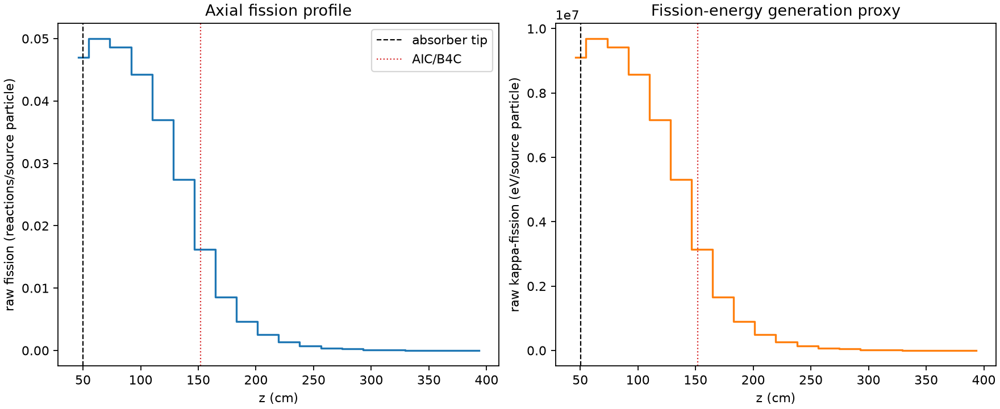
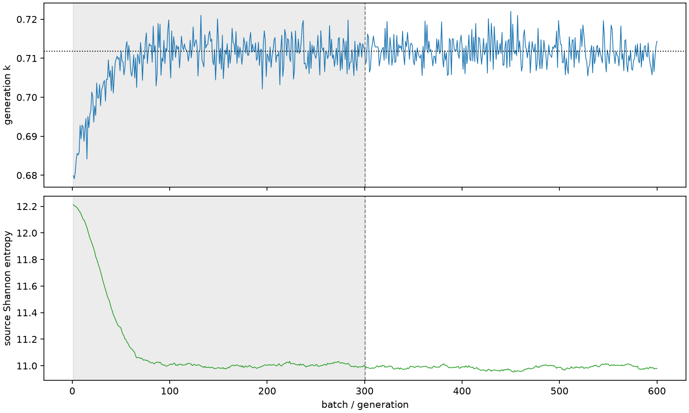

| field | value |
|---|---|
| experiment | V2-STAGE_128_OGRENCI_02-0020 |
| k | 0.7118451104696567 |
| MC standard error | 0.00014622537653297054 |
| seconds | 973.1431194609977 |
| acceptance | not_assessed |
| convergence | review_required |
Completed is output integrity only; physical and statistical review required. Zero tallies do not prove zero production or zero uncertainty.
| diagnostic | value |
|---|---|
| geometric fuel voxels | 5280 |
| zero fission tally voxels | 0 |
| low signal fuel voxels | 981 |
| low signal fission share | 0.0002308913778028165 |
| low signal kappa share | 0.00023091702083807353 |
| important fission share | 0.9500724211521471 |
| previous filter included | 4299 |
| duration estimate s | 1562.5173488400023 |
| actual minus estimate s | -589.3742293790046 |
| fission relative MC error | statistics |
|---|---|
| all_geometric_fuel | {"voxels": 5280, "positive_mean_voxels": 5280, "zero_mean_voxels": 0, "undefined_relative_error_voxels": 0, "median": 0.03218872174747524, "p95": 0.4251210171429699, "maximum": 0.9171332906137573} |
| low_signal | {"voxels": 981, "positive_mean_voxels": 981, "zero_mean_voxels": 0, "undefined_relative_error_voxels": 0, "median": 0.33950226637061814, "p95": 0.6010306684608403, "maximum": 0.9171332906137573} |
| important_95pct | {"voxels": 1961, "positive_mean_voxels": 1961, "zero_mean_voxels": 0, "undefined_relative_error_voxels": 0, "median": 0.00699779965342864, "p95": 0.013924759565893967, "maximum": 0.017416922798107606} |
| outside_previous_filter | {"voxels": 981, "positive_mean_voxels": 981, "zero_mean_voxels": 0, "undefined_relative_error_voxels": 0, "median": 0.33950226637061814, "p95": 0.6010306684608403, "maximum": 0.9171332906137573} |
| kappa_fission relative MC error | statistics |
|---|---|
| all_geometric_fuel | {"voxels": 5280, "positive_mean_voxels": 5280, "zero_mean_voxels": 0, "undefined_relative_error_voxels": 0, "median": 0.03212424744813576, "p95": 0.4242650573804024, "maximum": 0.9160614969056856} |
| low_signal | {"voxels": 981, "positive_mean_voxels": 981, "zero_mean_voxels": 0, "undefined_relative_error_voxels": 0, "median": 0.33852482350192054, "p95": 0.6001148598301326, "maximum": 0.9160614969056856} |
| important_95pct | {"voxels": 1961, "positive_mean_voxels": 1961, "zero_mean_voxels": 0, "undefined_relative_error_voxels": 0, "median": 0.006984405073693568, "p95": 0.013900248392943003, "maximum": 0.01738343764772763} |
| outside_previous_filter | {"voxels": 981, "positive_mean_voxels": 981, "zero_mean_voxels": 0, "undefined_relative_error_voxels": 0, "median": 0.33852482350192054, "p95": 0.6001148598301326, "maximum": 0.9160614969056856} |
| axial bin | fission share | kappa-fission share |
|---|---|---|
| 1 | 0.16257744627186738 | 0.16254551459214922 |
| 2 | 0.17275115985285572 | 0.17275537772685587 |
| 3 | 0.16806705479499015 | 0.16807116360199212 |
| 4 | 0.15317779028112935 | 0.15318107326656422 |
| 5 | 0.12793520263815855 | 0.12793845329560974 |
| 6 | 0.09482577315275757 | 0.09482811842525579 |
| 7 | 0.05595101286586063 | 0.05595613711849243 |
| 8 | 0.02961673667581236 | 0.02962128391789206 |
| 9 | 0.016059373316999907 | 0.016061668507596428 |
| 10 | 0.008708244846585216 | 0.008709606405130276 |
| 11 | 0.004704739421134985 | 0.00470539572015357 |
| 12 | 0.0025515460300300575 | 0.0025518741250332776 |
| 13 | 0.001377508918609029 | 0.001377665460317477 |
| 14 | 0.0007759883825336815 | 0.0007761047349006895 |
| 15 | 0.00042636925522145 | 0.0004264326705336096 |
| 16 | 0.00023111059742910245 | 0.00023115295663446938 |
| 17 | 0.0001354452465158637 | 0.00013546566821860038 |
| 18 | 7.272776050955869e-05 | 7.272812420684435e-05 |
| 19 | 3.954570776991358e-05 | 3.9546889576980306e-05 |
| 20 | 1.522398322954289e-05 | 1.5236792886306285e-05 |
Histories include the inactive-to-active transition at batch 300. kappa-fission approximates fission energy production, not total heat deposition.

